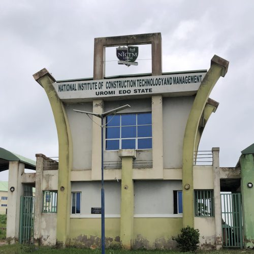

NICTM is a Federal Polytechnic established as a response to the increasing collapse of buildings, roads, and other critical infrastructures in Nigeria. Since 2014 when the Polytechnic took off, NICTM has been raising skilled entrepreneurs in construction and allied fields of endeavor. We have metamorphosed into a Centre of Technical Vocational Education and Training (TVET) where skill acquisition is prioritized. We presently have Schools namely: School of Engineering Technology, School of Environmental Technology, School of Applied Sciences, and School of Business Management Technology.
Candidates must possess a WASC/GCE/SSCE/NECO/NABTEB “O” level result with at least five credits at not more than two sittings. The subjects must include English Language, Mathematics, and any other three subjects relevant to their proposed course of study. In addition, the candidate must have written the Unified Tertiary Matriculation Examination (UTME) in the relevant year.
Thank you for your interest in our institution. The application portal is designed for prospective students seeking admission into any of our academic programmes. To begin your application, please visit the Admission Portal and complete the online application form. You will be able to select the programme of your choice and provide the required information and supporting documents.
Visit the Admission Portal.https://eportals.nict.edu.ng
Create an applicant account or log in.
Complete the online application form.
Select your preferred programme.
Upload the required documents.
Submit your application and print your acknowledgement slip.
We wish you success in your application and look forward to welcoming you to our institution.